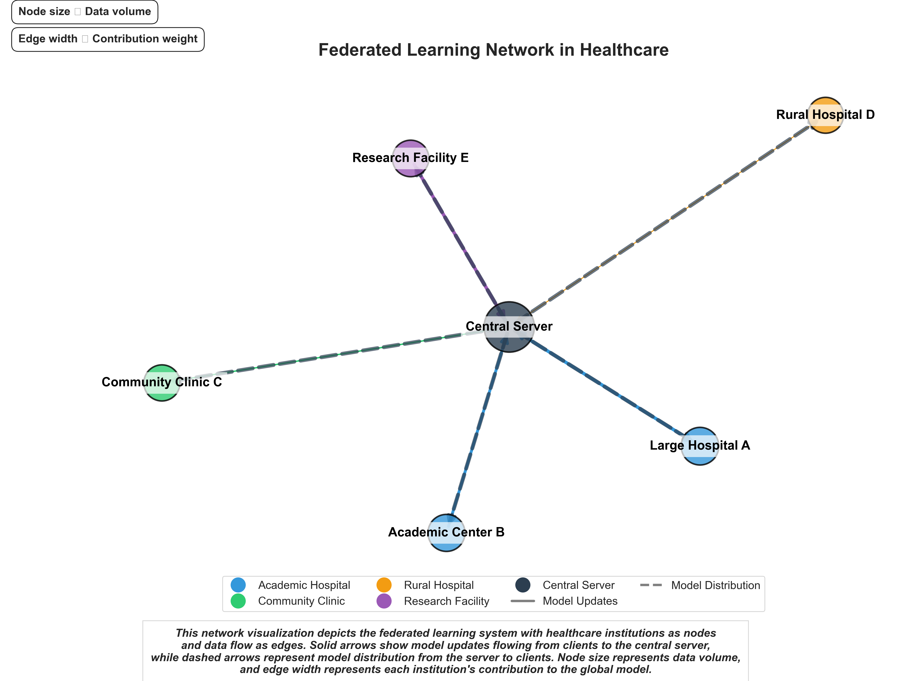

★
AI & ML Engineer
Komal Shahid
Building intelligent solutions that make a difference. Specializing in machine learning, data analysis, and AI-driven applications.
Scroll to explore
Featured Projects

Federated Healthcare AI
Privacy-preserving machine learning for healthcare data across multiple institutions.

Network Visualization
Interactive visualization tool for complex network relationships and data analytics.
Network Visualization Tool
An interactive network visualization tool that helps analyze complex relationships in large datasets. Built with D3.js and Python, this tool provides powerful insights through intuitive visualizations.